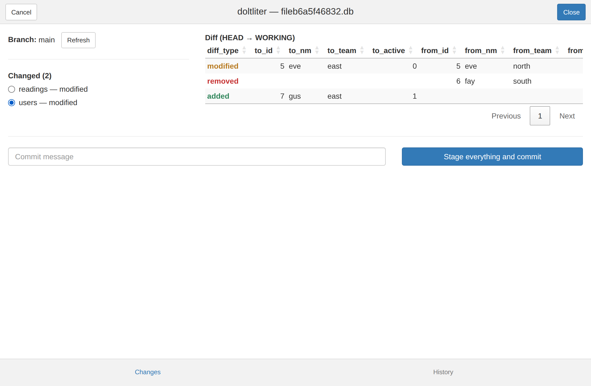
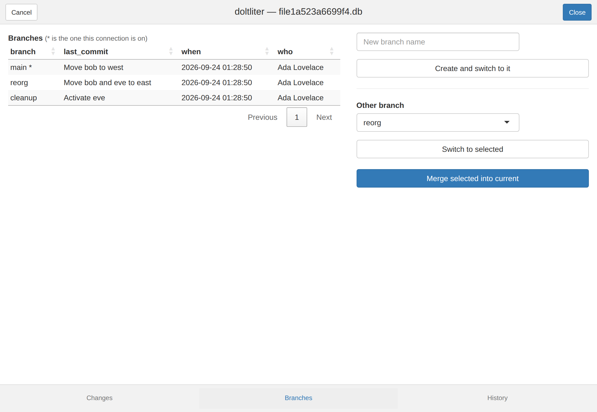
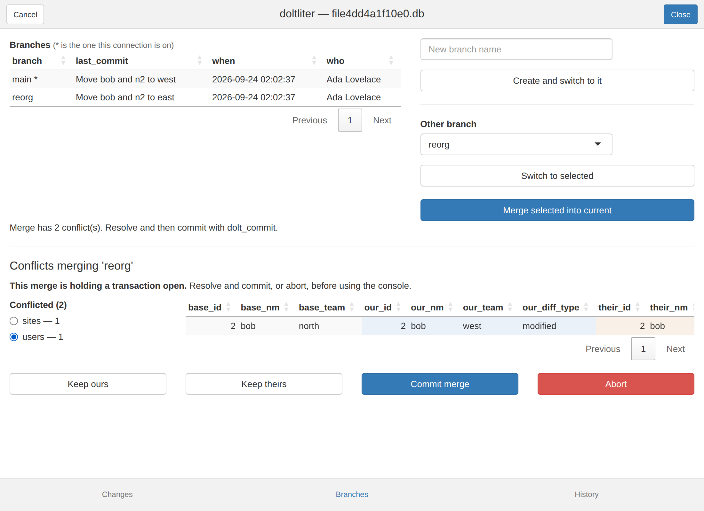
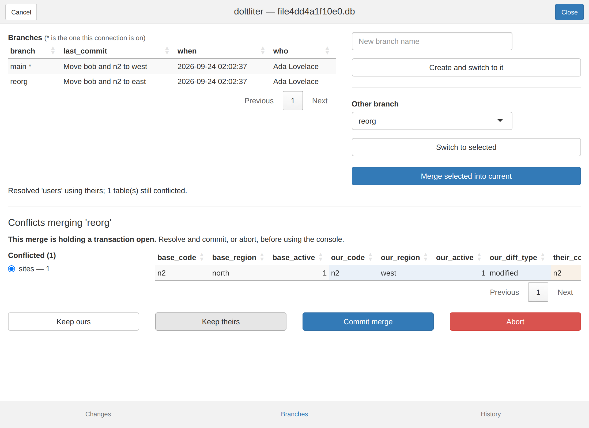

dolt_pane() is a Shiny gadget, and an RStudio addin, in the spirit of
RStudio’s Git pane: what has changed, what the change looks like row by row,
the history, and the branch operations — over a connection you already have
open.
library(doltliter)
con <- DBI::dbConnect(Doltlite(), "mydata.db")
dolt_pane(con)
Call it with no arguments and it uses the single open connection it can find; if there are several, it says so rather than guessing. There is also an Addins → DoltLite pane entry, which does the same thing.
It needs the suggested packages:
install.packages(c("shiny", "miniUI", "DT"))
1 It runs on your connection, and that is the whole design
The obvious way to build this would be a background process watching the database file, so the pane could sit there permanently like the Git pane does. That does not work here, and it is worth knowing why before the screenshots make it look simpler than it is.
A background pane means a second connection. Measured against a first:
| What a pane needs | On a second connection |
|---|---|
| See uncommitted changes | works |
| Commit them | works |
| Report the branch you are on | wrong — you on feature, it says main |
| See work inside an open transaction | blind — nothing, while you have changes |
| Write while you hold a transaction | fails — database is locked |
The third row is the one that settles it. Branches in DoltLite are per connection, so a background pane would show its own branch rather than yours, and pressing Commit could land your work on a branch you are not on, silently. Rows four and five are each independently fatal.
So the gadget runs in your R session, on the connection you hand it. The cost is that it blocks the console while open, which is the honest trade rather than a limitation to apologise for: the state that matters — your branch, your transaction, your uncommitted rows — lives in your connection and nowhere else.
2 Changes
The working set, the row-level diff for whichever table you select, and a commit box.

The diff is where this beats the Git pane rather than imitating it. Git’s
diffs are text, so a GUI adds modest value. dolt_table_diff() returns
structured rows — from_/to_ column pairs — which is genuinely better in a
sortable table than printed at the console, and it is the thing you most want
to look at before committing. diff_type leads because it is what you scan
for, and is coloured green for added, amber for modified, red for removed.
Two things the buttons are explicit about:
- Commit refuses while a SQL transaction is open. A Dolt commit takes
everything written in that transaction, so committing from the gadget
mid-
dbBegin()would record work your console has not finished — and a laterdbRollback()would not take it back out of the history. - “Stage everything and commit” is named that way because
dolt_add("-A")sweeps the whole working set, not just the table on screen.
3 Branches
List, create, switch, and merge.

4 Merging, and conflicts
Merges run inside a transaction because they have to. DoltLite rolls a
conflicting merge back whole in autocommit mode, so there would be nothing left
to inspect — conflicts are only reachable inside BEGIN/COMMIT. When one
conflicts, the gadget holds that transaction open and shows you base, ours and
theirs side by side.

Conflicts are handled one table at a time, because the conflict columns follow
the shape of the table they belong to — our_team for one table,
our_region for another — so several conflicted tables genuinely cannot share
a view. The picker lists them with their counts and the detail follows your
selection.
Keep ours and Keep theirs resolve the table you are looking at, not every
conflicted one. That is deliberate twice over: a button that silently acted on
tables off screen would be a trap, and the whole reason two tables conflict
separately is that they may deserve different answers.

Tables leave the list as they are resolved, so it empties as you work through
it. Then Commit merge finishes, or Abort rolls the whole thing back —
which restores the rows and clears the merge, since a rollback is exactly what
undoes an unfinished merge.
Two consequences worth keeping in mind:
- A conflicted merge means an open transaction on your connection. Finish or abort it before going back to the console. Closing the window rolls it back rather than stranding it.
- A merge is refused while the working set is dirty, because DoltLite requires a clean one. Commit on the Changes tab first.
5 What is not there
Remotes. dolt_push(), dolt_pull() and friends are not wrapped here.
They need a configured remote and credentials, and their side effects reach
beyond your machine — a different class of risk from everything above.
Tags, reset, revert, cherry-pick. All available as functions; none have buttons yet.
6 Packaging
shiny, miniUI, DT and rstudioapi are Suggests, not Imports. This is
one optional entry point in a package whose job is to be a DBI backend, and
most users of the backend never open it. dolt_pane() names what is missing
rather than failing obscurely:
dolt_pane(con)
#> Error: dolt_pane() needs shiny, miniUI and DT. Install with:
#> install.packages(c("shiny", "miniUI", "DT"))
Four suggested packages for one function is a fair argument for eventually moving the pane into a companion package. It costs nothing while the package is distributed from GitHub.